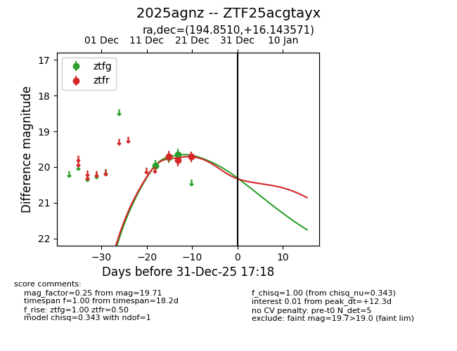
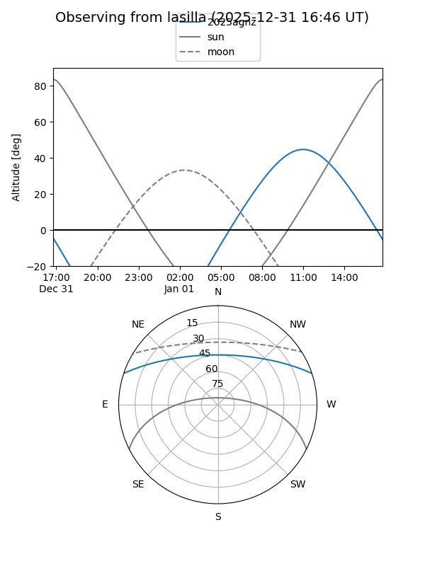
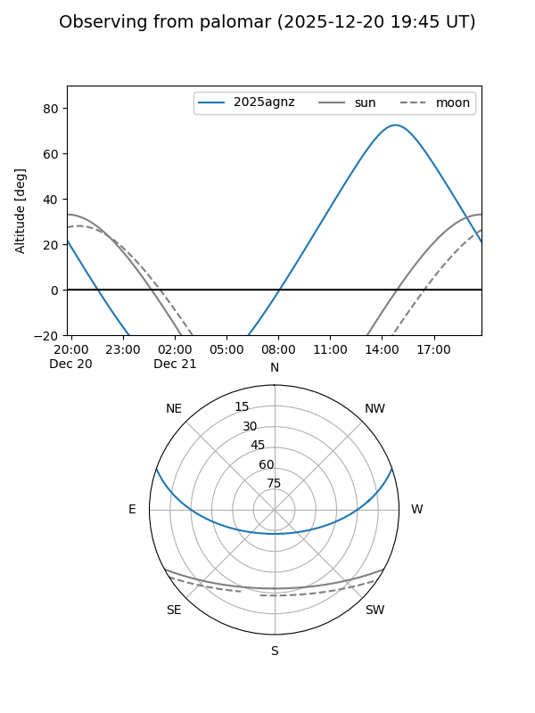
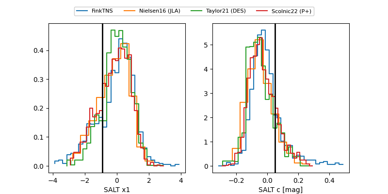

2025agnz
Target 2025agnz at 2025-12-18 15:27
Aliases and brokers:
FINK: fink-portal.org/ZTF25acgtayx
Lasair: lasair-ztf.lsst.ac.uk/objects/ZTF25acgtayx
ALeRCE: alerce.online/object/ZTF25acgtayx
TNS: wis-tns.org/object/2025agnz
YSE: ziggy.ucolick.org/yse/transient_detail/2025agnz
alt names
ZTF25acgtayx (ztf,fink_ztf)
2025agnz (tns,yse)
Coordinates:
equatorial (ra, dec) = 194.8510,+16.14357
equatorial (HMS+DMS) = 12:59:24.23,+16:08:36.85
galactic (l, b) = (312.8819,+78.86112)
Photometry
last ztfg=19.66, ztfr=19.81
3 ztfg, 2 ztfr detections
Lightcurve

Visibility


Additional plots
